YUSHIN WEBSITE
公開して終わらない
ホームページへ
YUSHIN WEBSITE
ホームページ更新・管理のご提案
施工事例や販売物件など、日々変わる情報を
御社で更新できる仕組みも一緒にご用意します。
株式会社ユウシン 様
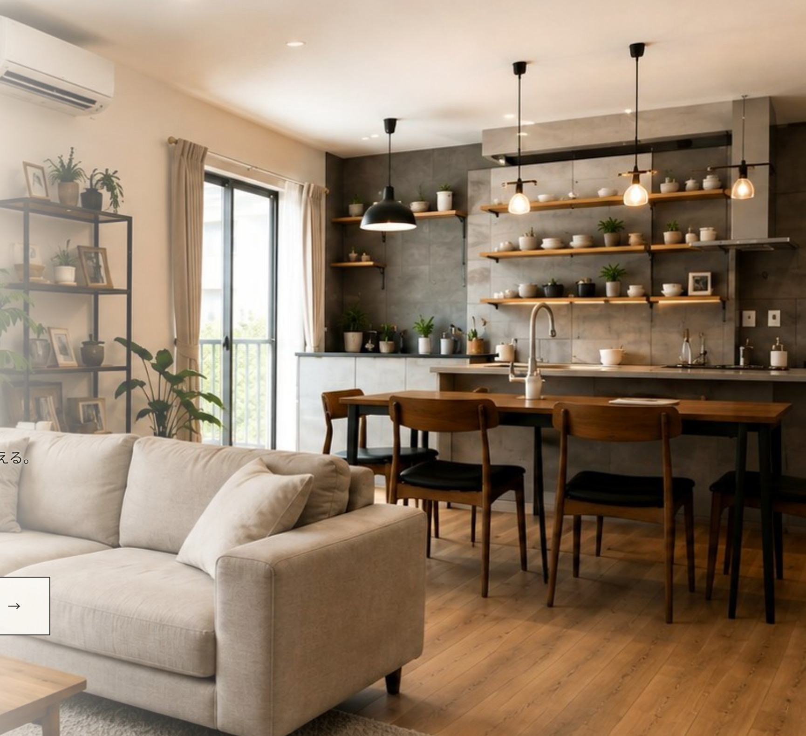
02CONCEPT
普段変更するところは、できるだけ御社で。
ホームページの公開後、変わることが多い情報は、そのたびに制作会社へ連絡しなくても、
御社の管理画面から更新できるようにしました。
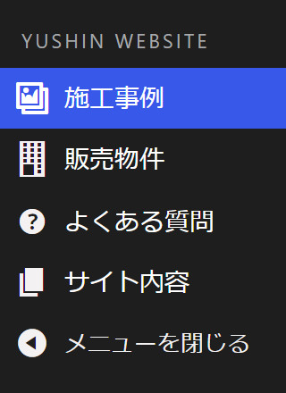
-
「施工事例を
追加したい」01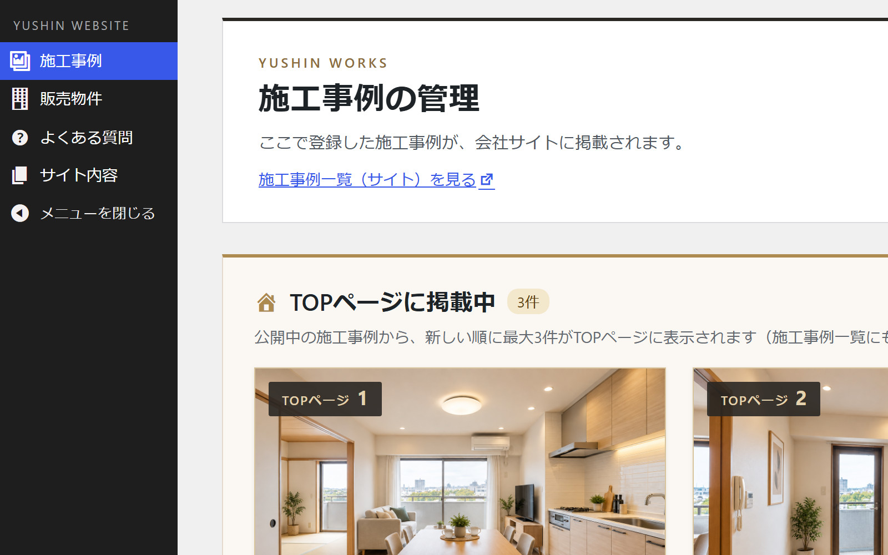
施工事例
-
「販売物件の
状況が変わった」02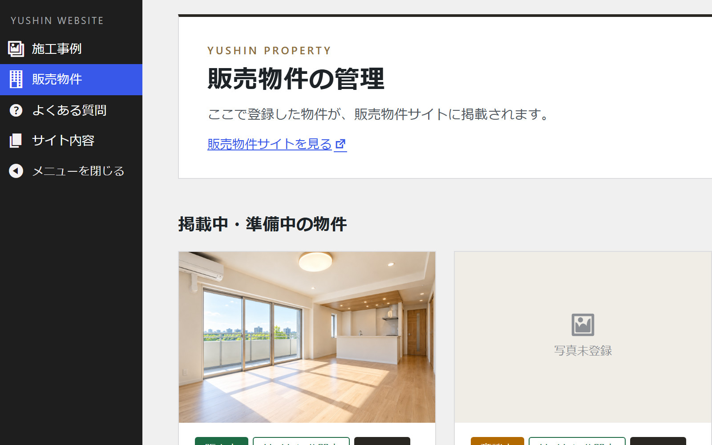
販売物件
-
「よく聞かれる質問を
追加したい」03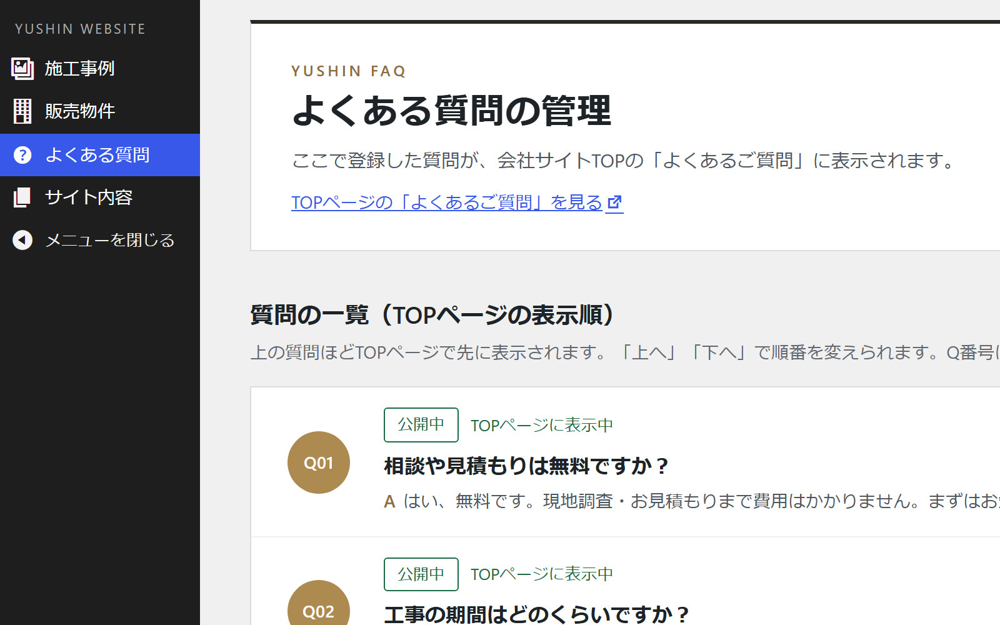
よくある質問
-
「会社情報を
変更したい」04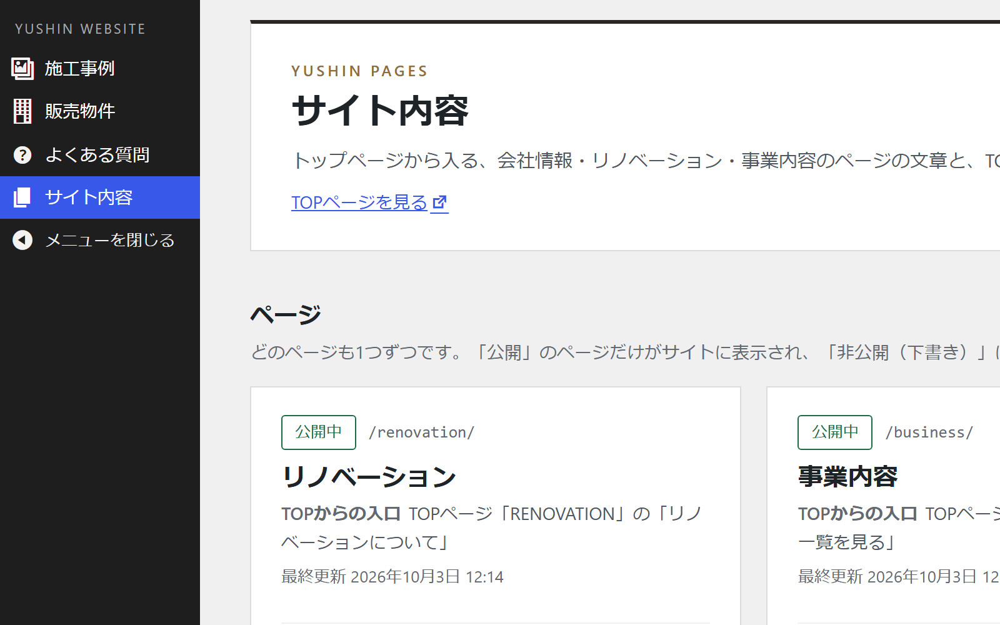
サイト内容
03WORKS
施工事例を、自分たちで追加
写真と内容を登録して、施工事例として公開。
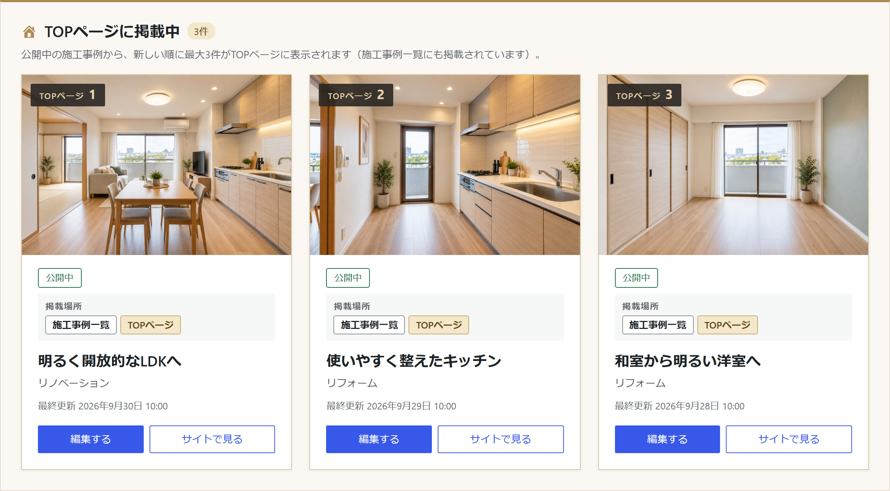
1 2 3- 1
TOPページに掲載中の事例
どの事例がTOPページに出ているか、ひと目で確認できます。
- 2
公開状態と掲載場所
「公開中」か、どこに掲載されているかを表示します。
- 3
写真と内容の編集
施工前・施工後の写真と説明を登録・変更できます。
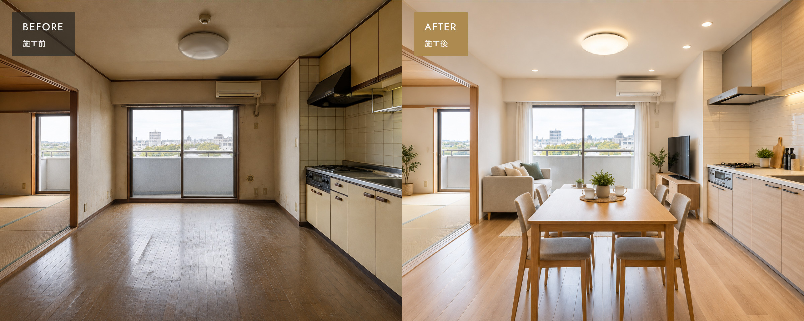
TOPページに掲載されている事例も、管理画面から確認できます。
04WORKS EDIT
施工事例を編集する
入力する場所が、公開ページのどこに出るかを確かめながら更新。
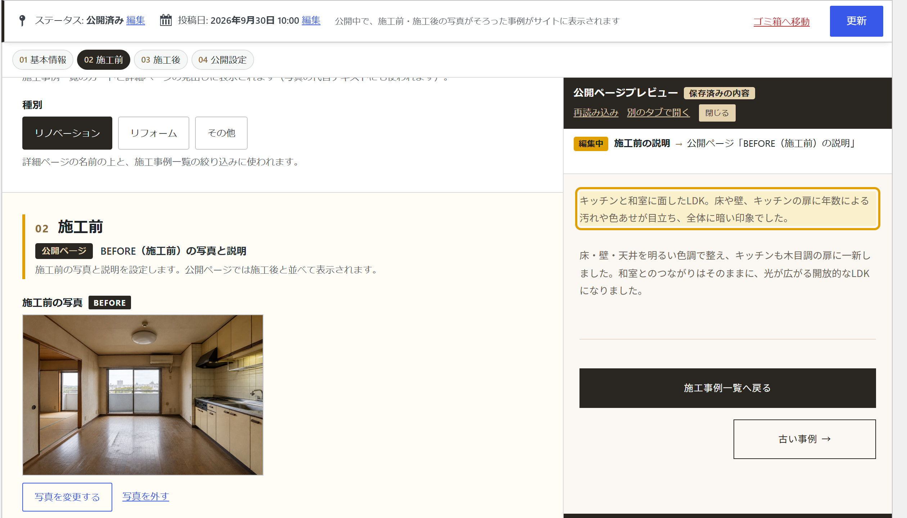
1 2 3 4- 1
入力は4つの項目に整理
基本情報・施工前・施工後・公開設定。
- 2
写真と説明を入力
施工前・施工後それぞれに登録します。
- 3
公開ページでの場所を表示
選んだ入力欄が、ページのどこに出るかを示します。
- 4
「更新」で反映
保存すると、公開ページに反映されます。
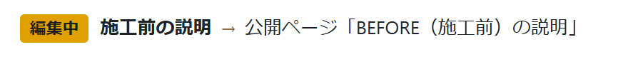
05PROPERTY
販売物件を、掲載から終了まで管理
販売中の情報だけでなく、掲載終了後も履歴として管理。
- 販売中
ホームページに掲載
- 商談中
掲載したまま、
状況を表示 - 掲載終了
ホームページからは外れ、
履歴として残ります
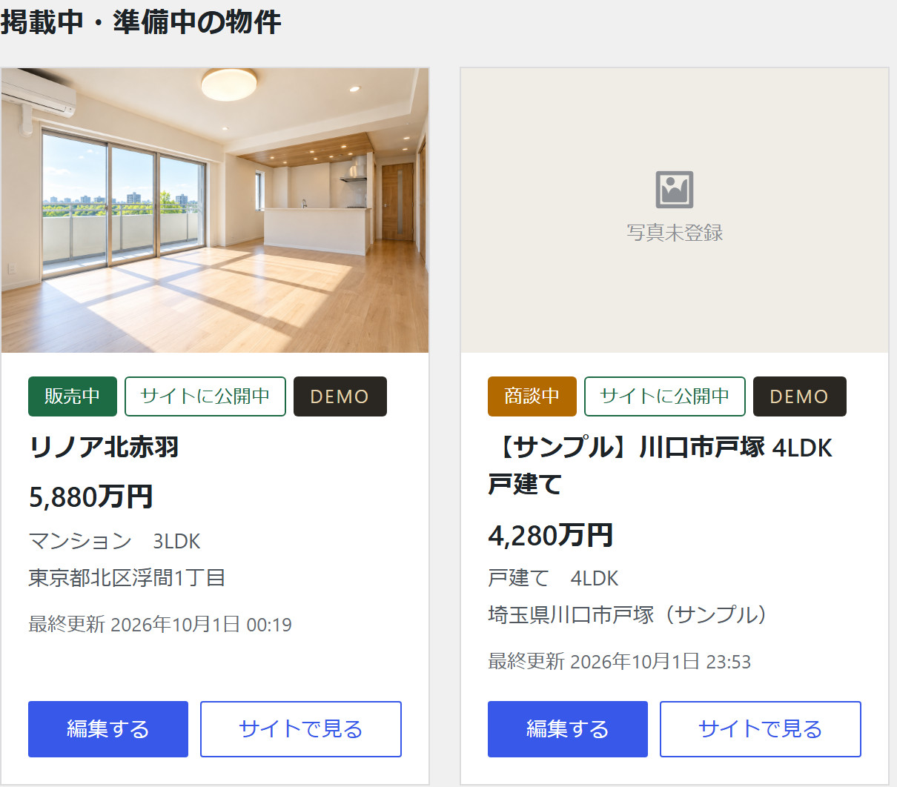
1 2- 1販売中の物件
- 2商談中の物件（掲載したまま「商談中」と表示）
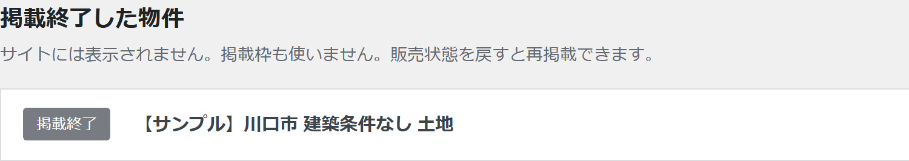
3掲載終了しても削除はされず、一覧に残ります。
販売状態を戻せば、もう一度掲載できます。
06PROPERTY EDIT
公開ページを見ながら、物件情報を更新
どの写真が、ページのどこに表示されるのかを確かめながら編集できます。
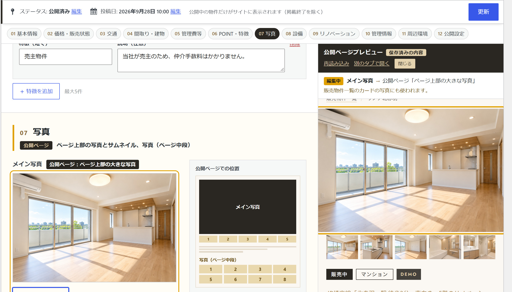
1 2 3 4- 1
入力項目を順番に整理
基本情報から公開設定まで、12の項目に分かれています。
- 2
メイン写真とギャラリー
写真を登録し、矢印で並べ替えられます。
- 3
写真の表示位置が分かる図
メイン写真・ギャラリーが、ページのどこに出るかを示します。
- 4
公開ページのプレビュー
選んだ項目の表示場所を、右側に示します。
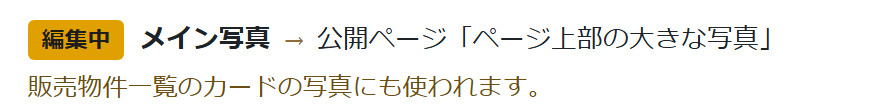
07FAQ
よくある質問も、あとから育てられます
お客様から実際によく聞かれることを、あとから追加できます。
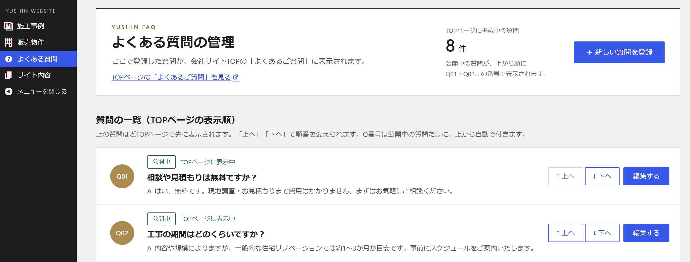
1 2 3 4- 1
質問を追加
聞かれたことを、その都度登録できます。
- 2
回答を編集
説明の仕方も、あとから見直せます。
- 3
表示順を変更
「上へ」「下へ」で並べ替え。番号は自動で振り直されます。
- 4
公開／非公開
準備中の質問は、非公開のまま置いておけます。
あとから質問が増えても、御社で追加・並べ替えができます。最初にすべてを決めておく必要はありません。
08SITE CONTENTS
会社情報・お問い合わせ先も一か所で
会社情報やお問い合わせ先も、まとめて管理。
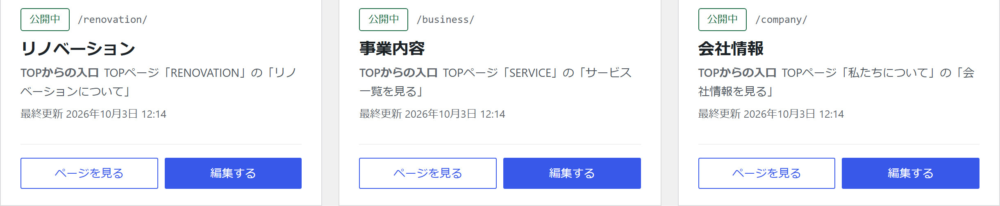
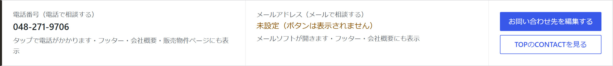
1TOPページ「お問い合わせ」
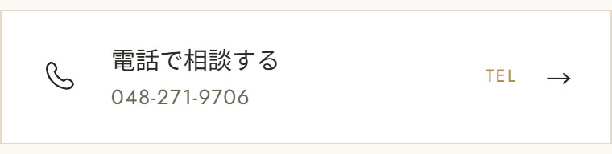
会社情報ページ
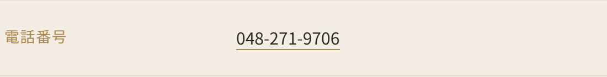
各ページ下部の
会社情報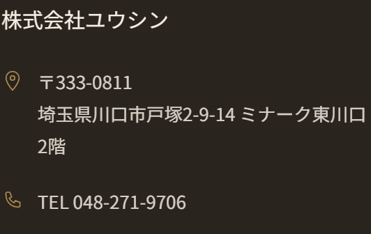
同じ電話番号やメールアドレスを、何か所も修正する必要はありません。
09CONNECTION
管理画面で更新した内容が、
ホームページに反映されます。
管理画面
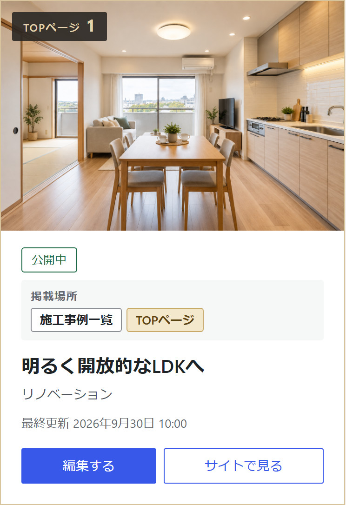
登録・公開
ホームページ
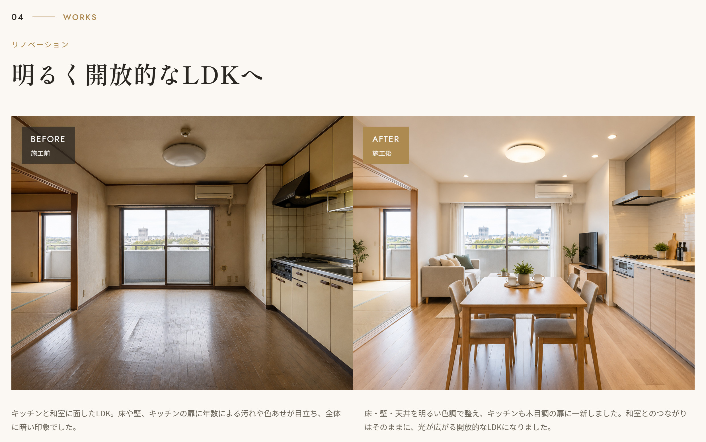
販売物件・よくある質問・会社情報も、同じ考え方で管理画面から更新できます。
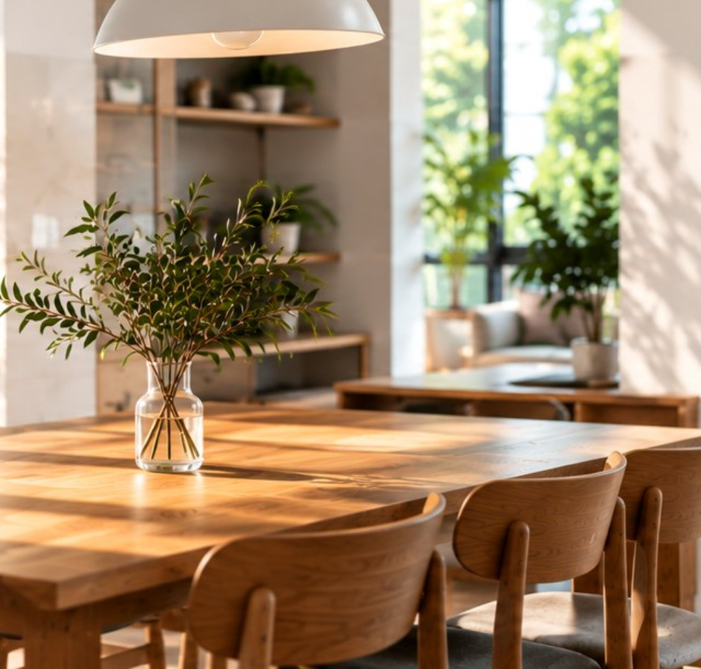
10FOR THE FUTURE
自分たちで使い続けられる
ホームページへ
ホームページを作って終わりではなく、
御社で情報を更新しながら、
長く使っていただける形を目指しました。
- 01ホームページを公開
- 02日々変わる情報は、御社で更新
- 03過去の情報も、残して管理
- 04公開後も、使い続けられる
公開して終わらないホームページへ
YUSHIN WEBSITE